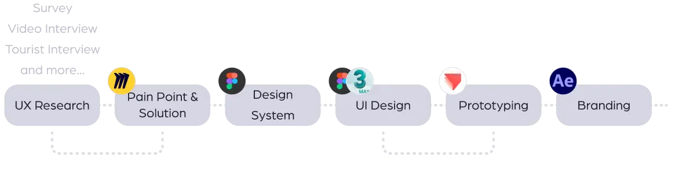
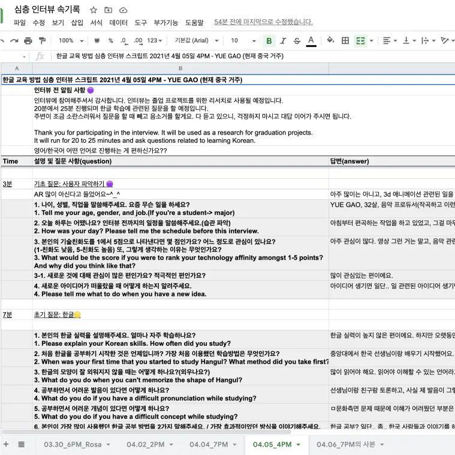
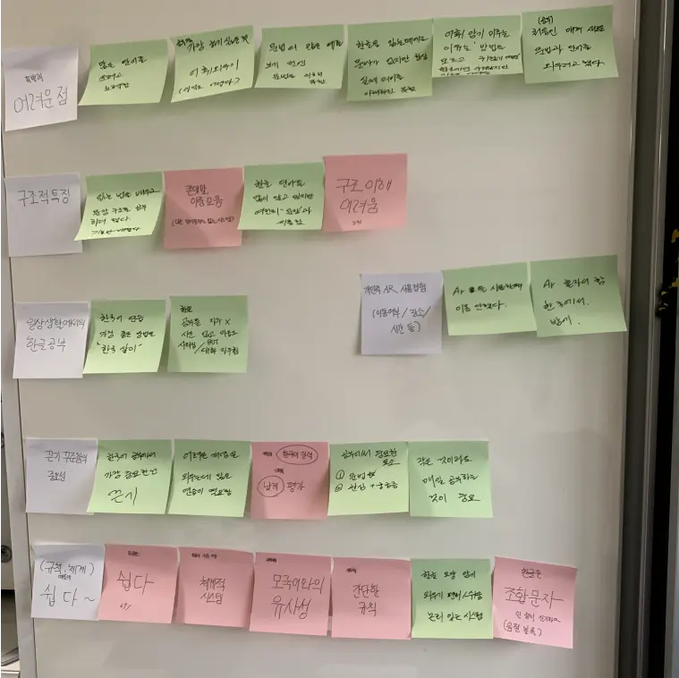
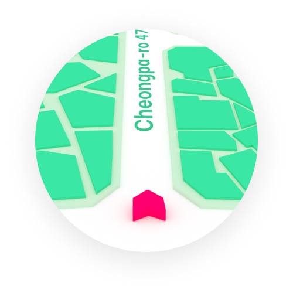
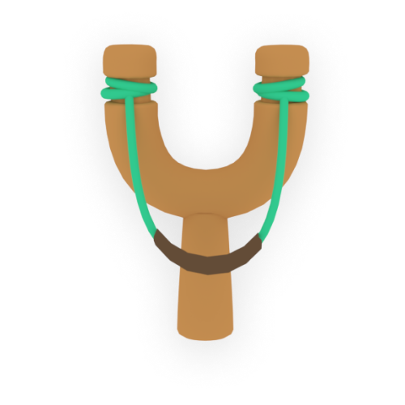
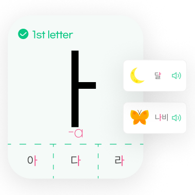

Hangeul(Korean language) was created in 1443, but did you know that the education for Korean language is only about 60-year-history? As Korean culture spreads widely in the global MZ generation (Millennial + Z generation; people born in 1981~2010), the demand for effective educational content is increasing. Currently, many kinds of Hangul education are using method of just memorization. But wouldn’t foreigners in the MZ generation who value vivid experiences need a more interesting method?

Video Interview
We interviewed 7 Korean learners to ask about studying foreign languages.
Interview
An interview was conducted at Gyeongbokgung Palace. We aksed tourists about their methods how to study Korean.
Survey
We conducted a survey for people who are interested in Korean on Reddit, Instagram and other web communities
to know their recognization about Hangul.


Pain Point & Solution
Feelings of pressure
Korean language learners usually sit down and look at their phone to learn Hangul.
Tedious memorization
Korean learners often memorize shapes and sounds of characters without grasping their creation principles.
Letter combinations
Innovating the combination method and logic of Hangul (Korean writing system).
We need a new educational service that allows foreigners to learn the principles of Hangul naturally without feeling bored or burdened. We designed an educational service that increases immersion and learning effect by utilizing AR games and moving contents.
Users are...
Traditional study methods make me feel burdened because they seem to require complete focus at the desk.
Explore

In the same place, they learn from various games in different places, not the same way every time.
Game

Set the method of game to be the same as the disciple principle of each Hangul. e.g. Match two ㄱ cards to create a letter.
Explain

When consonants and vowels are combined, It shows where they move and what shape they are.
Since the main target of "KoLing" is foreigners all over the world, not for Koreans, therefore we chose the IOS operating system that takes a higher market share. It is designed according to the IOS grid.
- If you access KoLing, the first thing you can see is your location on the 3D map. The map displays the name of the area where you are located, the name of the street, and nearby buildings.
- Bundle will tell you how many more steps you need to take for completion, and how many steps you have taken so far. You will check acquired items here.
- Don’t worry even if you don’t remember the pronunciation of Korean language while studying with KoLing! If you want to check the answer quickly, you can see the pronunciation table and get the hints easily at any time.